Session 30 – Importing/Exporting Data into R
Importing data is crucial for analyses in R as most of these are produced, retrieved or generated by other software. For example, measurements might be collected and annotated in excel sheets, sequences might be encoded in fasta/fastq forma in text files, images are stored as .tiff, .jpeg or other formats, sound might be encoded in .wav, etc. A great advantage of R is that the same base software or R-packages can serve to bring those datasets into the R environment. However, most of these are imported as standard R data structures as data frames (i.e., similar to matrices with columns and rows that contain a single value). Next, we will survey the most common forms to data input
30.1 Typing directly
The simples way to input data in R by typing data in the R console. We explain this in more detail when we describe data structures. However, this should intuitive as follows.
## create a vector with some values named 'my_vector'
my_vector <- c(1,4,5,2:20,99)
my_vector
#[1] 1 4 5 2 3 4 5 6 7 8 9 10 11 12 13 14 15 16 17 18 19 20 9930.2 Summary versus raw data
Data summaries are usually presented as tables, graphs, or diagrams with a list of descriptive (summary) statistics to represent or summarize the tendencies on the raw dataset. You can identify such summary tables if they present counts and statistics such as number of individuals in a treatment and control group (sample size), centrality statistics or averages (e.g., mean, median, and mode); measures of variability (e.g., standard deviation, standard error, confidence intervals, quartiles, minimum, and maximum values); bias on the distribution of the raw data (e.g., skewness, tendencies); and statistical dependence (if more than one variable was captured in the dataset). In most cases, such data summaries do not make inferences about the data and its ability to prove or disprove a research question. More information can be found here.
Here is an example of a summary table from this article:
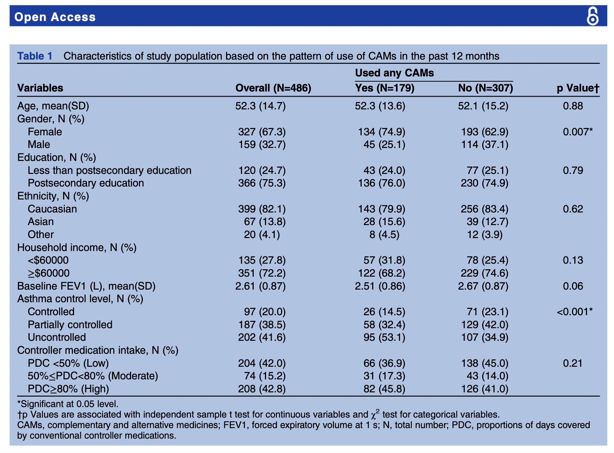
Raw data is some cases is hard to find and are not usually presented in the research article per se, but as supplementary document or as link to a dedicated data archive such as DRYAD, Zenodo, Figshare, and NCBI.
However, most scientists agree to increase the openness, integrity, and reproducibility of all scientific research. For this purpose, all used data to derive a research results and conclusions should be publicly accessible to anyone that wants to reproduce the results of a particular study. Therefore, raw data (i.e., sequences, individual measurements, metadata, etc) should be archived and its contents described for posterity. This is a relatively new tendency and emerged on early 2010’s after the reproducibility project aimed to reproduce the results of published from three leading psychology journals. In the original study, researchers volunteered to replicate a study of their choosing from these journals. Not surprisingly, the results were not astonishing and published in 2015 (see Abstract) and showed that the “…Replication effects were half the magnitude of original effects, representing a substantial decline. Ninety-seven percent of original studies had statistically significant results. Thirty-six percent of replications had statistically significant results; 47% of original effect sizes were in the 95% confidence interval of the replication effect size; 39% of effects were subjectively rated to have replicated the original result; and if no bias in original results is assumed, combining original and replication results left 68% with statistically significant effects…” Therefore, there is substantial decline on the reproductively of older studies (see commentary) and a new tendency has started to require that most data should be made public if an author desire his/her research published.
Here is an example of the raw table from the same article in the DRYAD repository:
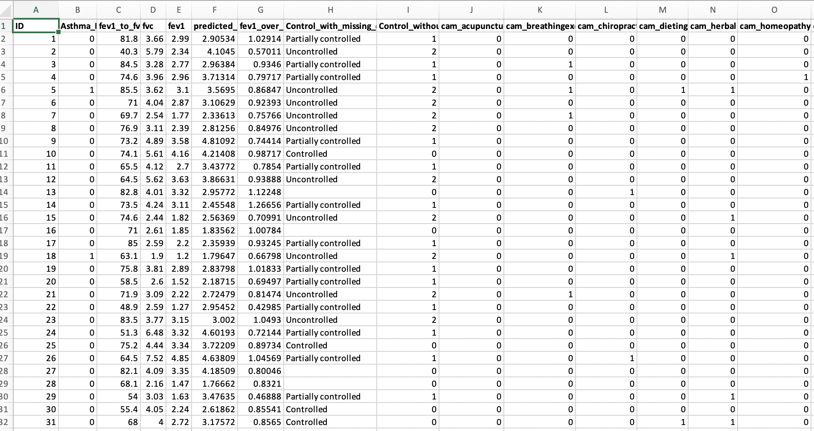
30.3 Downloading data files (GitHub)
IMPORTANT I uploaded some files of this class, you can access those and download them from this LINK TO FILES of BIO/BIT 209 to a folder of your choosing.
You can download individual files based in their extension. In the case of text files (e.g., .csv, .fasta, .txt), you can follow these steps:
1) Go to the file you want to download. Click on the file that you want to download. You will see the file contents.
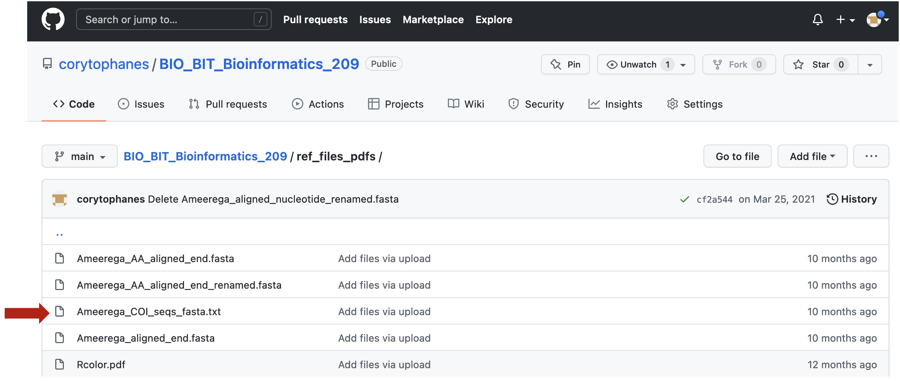
2) In the top right, you will see a tab that says Raw and click on this button.
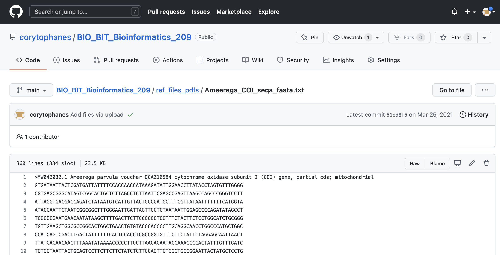
3) A new tab will appear and you can save this file as your_file.txt (if this is fasta or csv, use the appropriate extension). In Firefox (MACs), you will click on File > Save page as… and can name this file as your_file.txt
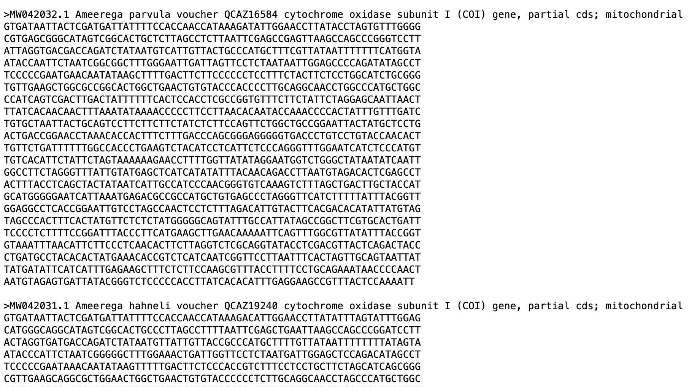 4) You probably want to have a working directory where you will store these files. You should make these folders with easy and accessible paths (e.g., in your desktop).
In case of other files like PDFs, images, word, and excel files (e.g., .pdf, .jpg, .png, .xlxs, .docx), you can download those individually with the following steps:
4.1) Go to the file you want to download.
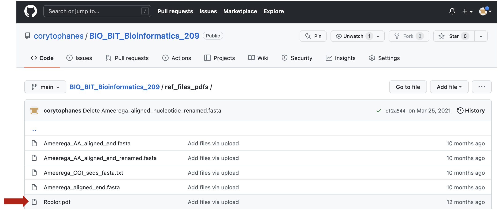
4.2) Click on the file that you want to download. You will see a tab that says Download and click on this button.
4.3) A new tab will appear and you can save this file as your_file and select the extension that best suits this file. In Firefox (MACs), you will click on File > Save page as… and can name this file as your_file.txt
4.4) You probably want to have a working directory where you will store these files. You should make these folders with easy and accessible paths (e.g., in your desktop).
You can download an entire GitHub repository. You can download these archives from the main repository by clicking on Code. A submenu will appear, and you can click on Download ZIP and you can place this uncompressed folder in your desktop or other working directory.
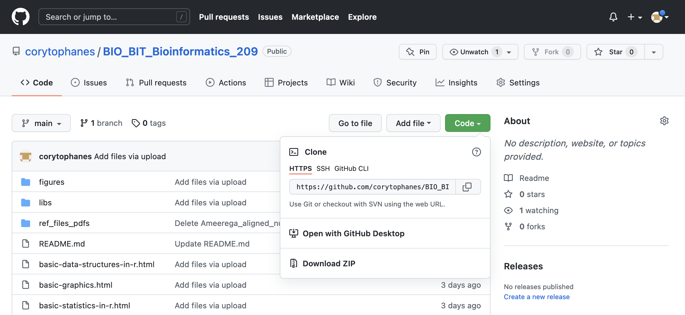
30.4 Importing data from a file
IMPORTANT I uploaded some files of this class, you can access those and download them from this LINK TO FILES of BIO/BIT 209 to a folder of your choosing.
1) In most cases, you already have your data file in some folder in your computer or plan to import it from some online repository. In the case of importing data from file from a known folder in your computer, this can be done as easily in R.
First, I will describe to import data from a text file with a tab delimited columns with numeric and character values.
macOS: You need to get the path (folder location in your hard drive) so you can indicate R where to retrieve such information. For example, the file that you want is known folder. You just drag & drop the folder in the R console and the path information will appear on it.
# ~/Desktop/Teach_R/class_datasets
# Next, we can explore what files are inside such folder.
# NOTE THAT THIS PATH IS SPECIFIC FOR YOUR COMPUTER
setwd("~/Desktop/Teach_R/class_datasets")
path_to_my_datafiles <- "~/Desktop/Teach_R/class_datasets"Note: You can get the path directly to the file by drag & drop the file into the R console.
Windows: For PCs, to get the path (folder location in your hard drive) so you can indicate R where to retrieve such information. For example, the file that you want is known folder. You need to find the path to this working directory. For this you need to highlight this folder, hold down the Shift key and right-click the file.
Then, you click on Properties and copy the names (text) of Location that includes the folder and file names. For example, if you want to change your working directory to the folder icon class_datasets (this is a made-up folder, you can name it as you wish or might one specific one).
Find its location: C:\Users\myPC\Desktop
You will get its path name as: C:\Users\myPC\Desktop\my_working_directory\class_datasets
Then use the setwd() function as follows
setwd("C:\Users\myPC\Desktop\my_working_directory\class_datasets")In some PCs, this will change the working directory to its desired path. However, in most, you will get the following error
setwd("C:\Users\myPC\Desktop\my_working_directory\class_datasets")
#Error: '\U' used without hex digits in character string starting ""C:\U"This indicates that the R is recognizing the \ (backslashes) as part of regular expressions. To make it work, you will need to change such \ character to / (forward slashes).
setwd("C:/Users/myPC/Desktop/my_working_directory/class_datasets")
getwd()
#[1] "C:/Users/myPC/Desktop/my_working_directory/class_datasets"Other have reported is to use double backslashes \\
setwd("C:\\Users\\myPC\\Desktop\\my_working_directory\\class_datasets")
getwd()
#[1] "C:/Users/myPC/Desktop/my_working_directory/class_datasets "Note: Like in macOS, you can apply the same protocol for a file rather than a folder.
2) You can get a list of files inside that working directory using file.list().
setwd("~/Desktop/Teach_R/class_datasets")
path_to_my_datafiles <- "~/Desktop/Teach_R/class_datasets"
list.files(path = path_to_my_datafiles,
pattern = NULL,
full.names = TRUE)
#[1] "/Users/juansantos/Desktop/Teach_R/class_datasets/acetylcholine_receptor_popset_1248341763_protein.txt"
#[2] "/Users/juansantos/Desktop/Teach_R/class_datasets/acetylcholine_receptor_popset_1248341763.txt"
#[3] "/Users/juansantos/Desktop/Teach_R/class_datasets/acetylcholine_receptor_Uniprot.txt"
#[4] "/Users/juansantos/Desktop/Teach_R/class_datasets/airway_scaledcounts.csv"
my_vector_of_paths <- list.files(path = path_to_my_datafiles, full.names = TRUE)You can select the type of text pattern or extension (e.g., .txt, .csv, .xlsx) to reduce the list of files.
#we could select only those that have a .csv (comma delimited) files
list.files(path = path_to_my_datafiles,
pattern = "*.csv",
full.names = TRUE)
# [1] "/Users/santosj/Desktop/Teach_R/class_datasets/airway_scaledcounts.csv"
# [2] "/Users/santosj/Desktop/Teach_R/class_datasets/mtcars2_csv.csv" 3) We can now import the data of tab and comma delimited files as data frames (a data structure).
# for tab delimited files while preserving headers
my_mtcars2_file_df <- read.table (file = "~/Desktop/Teach_R/class_datasets/mtcars2_file_tab.txt",
header = TRUE,
sep = "\t",
stringsAsFactors = FALSE)
head(my_mtcars2_file_df)
# cars mpg cyl disp hp drat wt qsec vs am gear carb
#1 Mazda_RX4 21.0 6 160 110 3.90 2.620 16.46 0 1 4 4
#2 Mazda_RX4_Wag 21.0 6 160 110 3.90 2.875 17.02 0 1 4 4
#3 Datsun_710 22.8 4 108 93 3.85 2.320 18.61 1 1 4 1
#4 Hornet_4_Drive 21.4 6 258 110 3.08 3.215 19.44 1 0 3 1
#5 Hornet_Sportabout 18.7 8 360 175 3.15 3.440 17.02 0 0 3 2
#6 Valiant 18.1 6 225 105 2.76 3.460 20.22 1 0 3 1# for comma delimited files while preserving headers
my_airway_file_df <- read.table (file = "~/Desktop/Teach_R/class_datasets/airway_scaledcounts.csv",
header = TRUE,
sep = ",",
stringsAsFactors = FALSE)
head(my_airway_file_df)
# ensgene SRR1039508 SRR1039509 SRR1039512 SRR1039513 SRR1039516 SRR1039517 SRR1039520 SRR1039521
#1 ENSG00000000003 723 486 904 445 1170 1097 806 604
#2 ENSG00000000005 0 0 0 0 0 0 0 0
#3 ENSG00000000419 467 523 616 371 582 781 417 509
#4 ENSG00000000457 347 258 364 237 318 447 330 324
#5 ENSG00000000460 96 81 73 66 118 94 102 74
#6 ENSG00000000938 0 0 1 0 2 0 0 030.5 Saving data to a file
You can save data frames as tab or comma delimited files using the function write.table(). However, you should make sure that the folder where you will like your files to be saved is defined.
#define the the output folder
setwd("~/Desktop/Teach_R/class_datasets")
#confirm that the output directory is correct
getwd()
#[1] "/Users/juansantos/Desktop/Teach_R/class_datasets""
# to determine the separation between columns is defined by the argument 'sep ='. For tabs, you use sep =”\t” and for commas you use sep =”,”
write.table(my_mtcars2_file_df,
file = "mtcars2_file_tab.txt",
sep = "\t",
col.names = TRUE)30.6 Saving data as Rdata (.rdata, .rda)
You might feel compelled to save your R session. This action will store your complete R workspace or selected “objects” from a workspace in a R-Data file with extension .rdata and .rda that can be loaded back by R. In most cases, you will do this to save you time in your next session. I do not usually save my R sessions, as the .rdata and .rda files are not human readable, and in most cases my interest are in the functionality of the scripts that call data and run functions within R rather than going back a preloaded session.
30.7 Import Excel formated data
We can now import the data from Excel spreadsheet files as data frames (a data structure). We could use R-package openxlsx and its function read.xlsx().
#install package if not present in your library
install.packages("openxlsx")
library(openxlsx)You can load the FIRST sheet to a data frame that has headers on the first row.
my_mtcars2_xlsx_df <- read.xlsx(xlsxFile = "~/Desktop/Teach_R/class_datasets/mixed_datasets.xlsx",
sheet = 1,
startRow = 1,
colNames = TRUE)
head(my_mtcars2_xlsx_df)
# cars mpg cyl disp hp drat wt qsec vs am gear carb
#1 Mazda_RX4 21.0 6 160 110 3.90 2.620 16.46 0 1 4 4
#2 Mazda_RX4_Wag 21.0 6 160 110 3.90 2.875 17.02 0 1 4 4
#3 Datsun_710 22.8 4 108 93 3.85 2.320 18.61 1 1 4 1
#4 Hornet_4_Drive 21.4 6 258 110 3.08 3.215 19.44 1 0 3 1
#5 Hornet_Sportabout 18.7 8 360 175 3.15 3.440 17.02 0 0 3 2
#6 Valiant 18.1 6 225 105 2.76 3.460 20.22 1 0 3 1Now, you can load the SECOND sheet to a data frame that has headers on the first row.
my_airway_xlsx_df <- read.xlsx(xlsxFile = "~/Desktop/Teach_R/class_datasets/mixed_datasets.xlsx",
sheet = 2,
startRow = 1,
colNames = TRUE)
head(my_airway_xlsx_df)
# ensgene SRR1039508 SRR1039509 SRR1039512 SRR1039513 SRR1039516 SRR1039517 SRR1039520 SRR1039521
#1 ENSG00000000003 723 486 904 445 1170 1097 806 604
#2 ENSG00000000005 0 0 0 0 0 0 0 0
#3 ENSG00000000419 467 523 616 371 582 781 417 509
#4 ENSG00000000457 347 258 364 237 318 447 330 324
#5 ENSG00000000460 96 81 73 66 118 94 102 74
#6 ENSG00000000938 0 0 1 0 2 0 0 030.8 Save data as Excel formated file
We can save a data frame as an Excel spreadsheet with R-package openxlsx and its function write.xlsx().
#define the the output folder
setwd("~/Desktop/Teach_R/class_datasets")
#confirm that the output directory is correct
getwd()
#[1] "/Users/juansantos/Desktop/Teach_R/class_datasets""
my_airway_xlsx_df <- write.xlsx(my_mtcars2_file_df,
sheetName = "my_mtcars_xlsx_sheet",
file = "mtcars_xlsx.xlsx")30.9 Fixing problems while importing datasets
It is not unusual to you might have problems while importing datasets from DRYAD or any other source into R. These usually must do column titles, unusual characters, uneven number of entries (i.e., some rows have more than the others). These can easily be preprocess directly in the text or excel files before you import and save you time.
1) You can start by determine if R is unable to open or input data from your file. We can test with a file with errors mtcars2_file_tab_with_errors.txt
## We try to import this file and it has error
my_mtcars2_file_df <- read.table (file = "~/Desktop/Teach_R/class_datasets/mtcars2_file_tab_with_errors.txt",
header = TRUE,
sep = "\t",
stringsAsFactors = FALSE)
## some examples of errors will be
#Error in read.table(file = "~/Desktop/Teach_R/class_datasets/mtcars2_file_tab_with_errors.txt", :
# more columns than column names
#Error in scan(file = file, what = what, sep = sep, quote = quote, dec = dec, :
# line 3 did not have 15 elements
## if you try to see if you have loaded that dataset, you get an error
my_mtcars2_file_df
#Error: object 'my_mtcars2_file_df' not foundThe output indicates that the number of column names does not match the number of entries in a row of the dataset.
2) You can start by opening the file in excel and notice if the column names (i.e., variable names) do match the number of columns. If they do not, you need to add a missing name(s). Likewise, no rows can have more values than those of the column names, unless you are planning to import without column names. It is not uncommon that some values might have incorrectly entered and you have to correct those before you import your dataset into R.
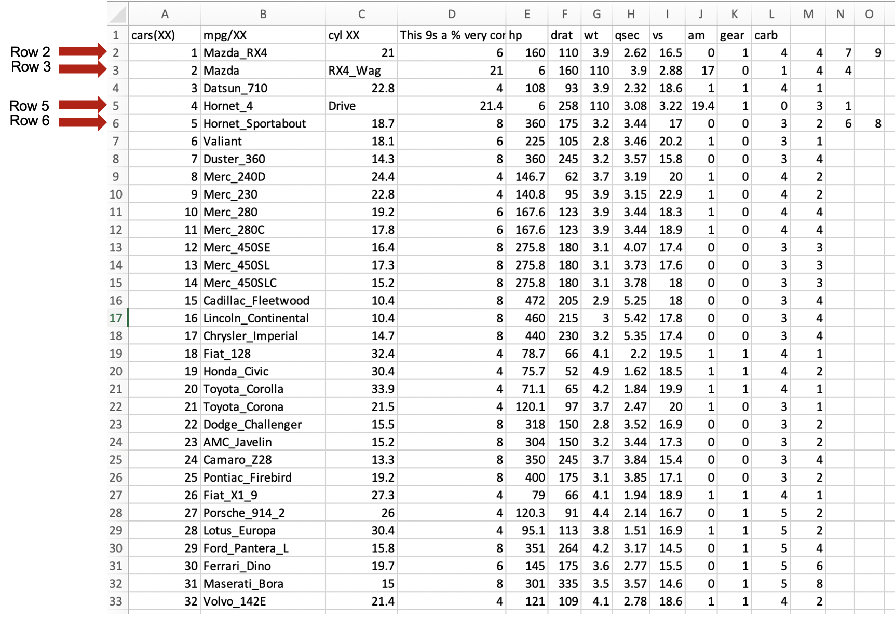
We notice that rows 2, 3,5 and 6 have misplaced values, that need to be corrected. Some might need to be removed (e.g., as in rows 2 and 6) or the text that should be in one column
has moved to the next column (e.g., as in rows 3 and 5). Here is this table after correction:
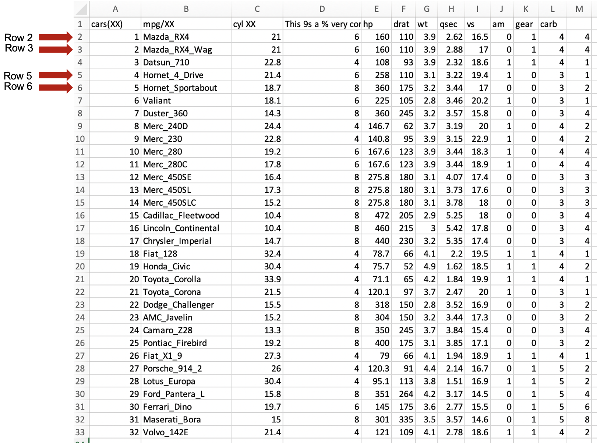
We probably will be able to import this dataset, but we need to clean it up a bit more
## We try to import this file again
my_mtcars2_file_df <- read.table (file = "~/Desktop/Teach_R/class_datasets/mtcars2_file_tab_with_errors2.txt",
header = TRUE,
sep = "\t",
stringsAsFactors = FALSE)
head(my_mtcars2_file_df)
# cars.XX. mpg.XX cyl.XX This.9s.a...very.complex.......Name hp drat wt qsec vs am gear carb X
#1 1 Mazda_RX4 21.0 6 160 110 3.90 2.620 16.46 0 1 4 4
#2 2 Mazda_RX4_Wag 21.0 6 160 110 3.90 2.875 17.02 0 1 4 4
#3 3 Datsun_710 22.8 4 108 93 3.85 2.320 18.61 1 1 4 1
#4 4 Hornet_4_Drive 21.4 6 258 110 3.08 3.215 19.44 1 0 3 1
#5 5 Hornet_Sportabout 18.7 8 360 175 3.15 3.440 17.02 0 0 3 2
#6 6 Valiant 18.1 6 225 105 2.76 3.460 20.22 1 0 3 1
names(my_mtcars2_file_df)
#[1] "cars.XX." "mpg.XX" "cyl.XX" "This.9s.a...very.complex.......Name" "hp"
#[6] "drat" "wt" "qsec" "vs" "am"
#[11] "gear" "carb" "X" 3) We notice that the names for the last column has been assigned a title of a generic X and the column 1 has only the row increasing numbers (i.e., is a useless column). We can move the names of the columns by one cell and delete the column 1.
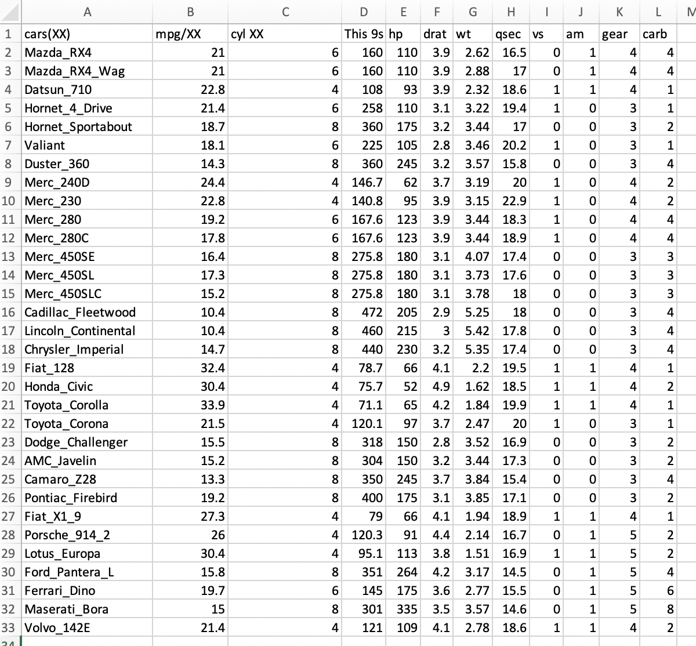
We probably will be able to import this dataset again, but we need to clean it up a bit more
## We try to import this file again
my_mtcars2_file_df <- read.table (file = "~/Desktop/Teach_R/class_datasets/mtcars2_file_tab_with_errors3.txt",
header = TRUE,
sep = "\t",
stringsAsFactors = FALSE)
head(my_mtcars2_file_df)
# cars.XX. mpg.XX cyl.XX This.9s.a...very.complex.......Name hp drat wt qsec vs am gear carb
#1 Mazda_RX4 21.0 6 160 110 3.90 2.620 16.46 0 1 4 4
#2 Mazda_RX4_Wag 21.0 6 160 110 3.90 2.875 17.02 0 1 4 4
#3 Datsun_710 22.8 4 108 93 3.85 2.320 18.61 1 1 4 1
#4 Hornet_4_Drive 21.4 6 258 110 3.08 3.215 19.44 1 0 3 1
#5 Hornet_Sportabout 18.7 8 360 175 3.15 3.440 17.02 0 0 3 2
#6 Valiant 18.1 6 225 105 2.76 3.460 20.22 1 0 3 1names(my_mtcars2_file_df)
names(my_mtcars2_file_df)
# [1] "cars.XX." "mpg.XX" "cyl.XX" "This.9s.a...very.complex.......Name" "hp"
# [6] "drat" "wt" "qsec" "vs" "am"
#[11] "gear" "carb"4) We can simplify the column names and texts if you have character columns by replacing spaces, ., ;, ,, ( ), [ ], { }, =, ", /, \, +, ?, $, %, *, # or any other strange symbols with _. Likewise, this will make the column names short and easy to interpret.
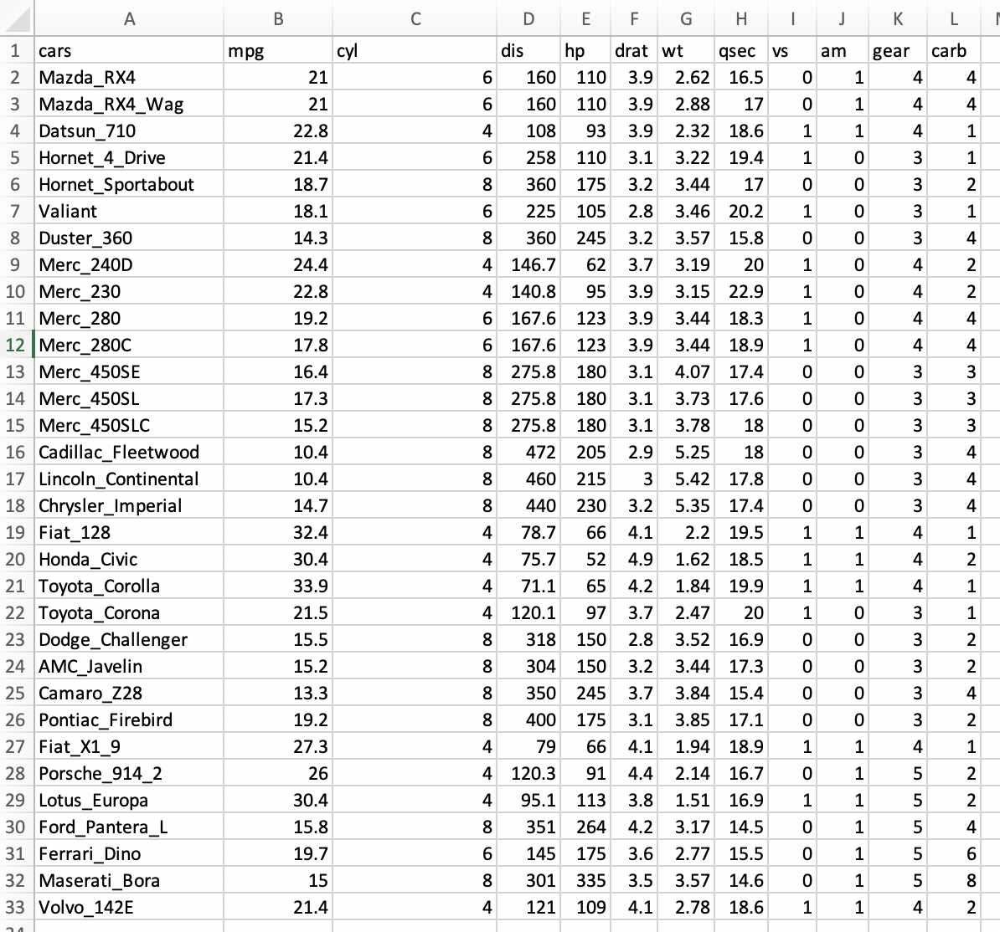
We probably will be able to import this dataset again and this might be good for your analyses.
## We try to import this file again
my_mtcars2_file_df <- read.table (file = "~/Desktop/Teach_R/class_datasets/mtcars2_file_tab.txt",
header = TRUE,
sep = "\t",
stringsAsFactors = FALSE)
head(my_mtcars2_file_df)
# cars mpg cyl disp hp drat wt qsec vs am gear carb
#1 Mazda_RX4 21.0 6 160 110 3.90 2.620 16.46 0 1 4 4
#2 Mazda_RX4_Wag 21.0 6 160 110 3.90 2.875 17.02 0 1 4 4
#3 Datsun_710 22.8 4 108 93 3.85 2.320 18.61 1 1 4 1
#4 Hornet_4_Drive 21.4 6 258 110 3.08 3.215 19.44 1 0 3 1
#5 Hornet_Sportabout 18.7 8 360 175 3.15 3.440 17.02 0 0 3 2
#6 Valiant 18.1 6 225 105 2.76 3.460 20.22 1 0 3 1
names(my_mtcars2_file_df)
# [1] "cars" "mpg" "cyl" "disp" "hp" "drat" "wt" "qsec" "vs" "am" "gear" "carb" 30.10 Simplifying embellished excel datasets
Many datasets might be heavily embellished to appeal readers, yet these might make importing such datasets to R very hard. For this purpose, we should simplify such datasets to make them simpler to import into R. Here is an example of an adorned excel file mtcars_xlsx_to_clean.xlsx, you can find it at LINK TO FILES of BIO/BIT 209 and download it to a folder of your choosing.
Here is how the first excel worksheet looks in such program.
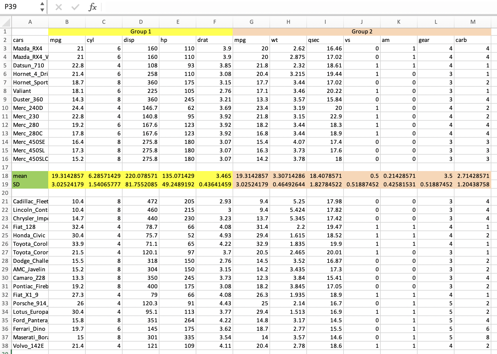
If we try to import the first excel worksheet into R, we get a data frame with incorrect column names.
library(openxlsx)
incorrect_mtcars_xlsx_df <- read.xlsx(xlsxFile = "~/Desktop/Teach_R/my_working_directory/mtcars_xlsx_to_clean.xlsx",
sheet = 1,
startRow = 1,
colNames = TRUE)
head(incorrect_mtcars_xlsx_df)
# X1 Group.1 X3 X4 X5 X6 Group.2 X8 X9 X10 X11 X12 X13
#1 cars mpg cyl disp hp drat mpg wt qsec vs am gear carb
#2 Mazda_RX4 21 6 160 110 3.9 20 2.62 16.46 0 1 4 4
#3 Mazda_RX4_Wag 21 6 160 110 3.9 20 2.875 17.02 0 1 4 4
#4 Datsun_710 22.8 4 108 93 3.85 21.8 2.3199999999999998 18.61 1 1 4 1
#5 Hornet_4_Drive 21.4 6 258 110 3.08 20.399999999999999 3.2149999999999999 19.440000000000001 1 0 3 1
#6 Hornet_Sportabout 18.7 8 360 175 3.15 17.7 3.44 17.02 0 0 3 2
names(incorrect_mtcars_xlsx_df)
# [1] "X1" "Group.1" "X3" "X4" "X5" "X6" "Group.2" "X8" "X9" "X10" "X11" "X12" "X13" We notice that all column names are incorrect and have a X-number code and there is a mixture of text and numbers in the columns, as if the column names have become measurements.
To correct this, it requires to remove the row 1 in the excel sheet where the names Group 1 and Group 2 are located and incorporate such group names into the column names located in the second row.
It is important that each column has a unique name and it is informative enough to avoid R giving each column a X-number code to make these column names unique.
An example of the same excel sheet with simplified names with enough and descriptive information present, but we incorporated the name of the groups into the column names and removed the useless mean and SD rows as well as the empty rows in the middle of the spreadsheet.
Here is how the simplified and corrected excel worksheet looks in such program.
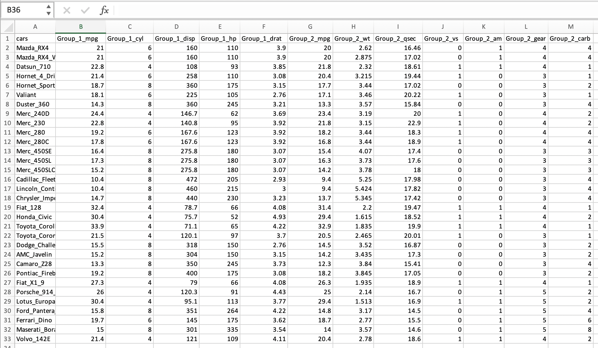
Notice that this Excel sheet has in its first row the simplified variable names and the first column has the names of each type of car (i.e., it corresponds to individual IDs in this dataset). If we try to import this updated excel worksheet into R, we get a better result. The variables names are recognized, and the data is better organized for further analyses.
library(openxlsx)
correct_mtcars_xlsx_df <- read.xlsx(xlsxFile = "~/Desktop/Teach_R/my_working_directory/mtcars_xlsx_cleaned.xlsx",
sheet = 1,
startRow = 1,
colNames = TRUE)
head(correct_mtcars_xlsx_df)
# cars Group_1_mpg Group_1_cyl Group_1_disp Group_1_hp Group_1_drat Group_2_mpg Group_2_wt Group_2_qsec Group_2_vs Group_2_am Group_2_gear Group_2_carb
#1 Mazda_RX4 21.0 6 160 110 3.90 20.0 2.620 16.46 0 1 4 4
#2 Mazda_RX4_Wag 21.0 6 160 110 3.90 20.0 2.875 17.02 0 1 4 4
#3 Datsun_710 22.8 4 108 93 3.85 21.8 2.320 18.61 1 1 4 1
#4 Hornet_4_Drive 21.4 6 258 110 3.08 20.4 3.215 19.44 1 0 3 1
#5 Hornet_Sportabout 18.7 8 360 175 3.15 17.7 3.440 17.02 0 0 3 2
#6 Valiant 18.1 6 225 105 2.76 17.1 3.460 20.22 1 0 3 1
names(correct_mtcars_xlsx_df)
#[1] "cars" "Group_1_mpg" "Group_1_cyl" "Group_1_disp" "Group_1_hp" "Group_1_drat" "Group_2_mpg" "Group_2_wt" "Group_2_qsec" "Group_2_vs" "Group_2_am" "Group_2_gear"
#[13] "Group_2_carb"30.11 Accessing online data: DRYAD
You might want to access data for your own research, data comparisons with previous published studies, and/or complement your own datasets and projects. This can be done using and accessing several online databases. One of the most important is DRYAD. From their website, Dryad Digital Repository mission is to serve as an indefinity repository of curated (i.e., revised) digital resources that makes published data discoverable, freely reusable, and citable. Therefore, these data can then be re-used to create new knowledge. DRYAD is an initiative >300 journals and scientific societies that adopted a joint data archiving policy (JDAP) for their publications, and their recognition that open data, easy-to-use, not-for-profit, community-governed data infrastructure is fundamental to maintain such digital resources. Dryad stores mostly biological and medical data used in peer-reviewed journals.
To access DRYAD, you can first determine if the article of interest has archived data in this repository. We will use this article that you can access from PubMed:
Allen, R. C., Angst, D. C., & Hall, A. R. (2019). Resistance Gene Carriage Predicts Growth of Natural and Clinical Escherichia coli Isolates in the Absence of Antibiotics. Applied and environmental microbiology, 85(4), e02111-18. https://doi.org/10.1128/AEM.02111-18
1) For this example, we find the digital article by searching PubMed. The results show that it can be accessed by a PubMed link or by a PMC link.

2) Most times, the authors will report that they have a supplementary material in their methods or in special section at the end of the article (e.g., footnotes, supplementary material, etc). In this case, it provides only a PDF and a link to journal digital article.

3) Like in many cases, there is no mention of a Dryad submission or DOI in the text of the paper. However, you can try to determine if such digital repository exists by searching the title of the article directly in DRYAD. I suggest doing this and not use the Dryad DOI (sometimes this is a broken link). To search in the Dryad website, you will paste the title of the article on the Search tab in the top right side.

4) If associated data files exist for this paper, you will see how many entries are associated to the paper title. In this case, only one exists and you can click on such link.

5) In the webpage associated with the data, you will see a title like Data from:…, a summary/abstract of the paper, and a link to the Data Files with a tab to Download dataset. You can click on the latter to get the associated zip file. For reference, the link for this datset in the DRYAD for this paper is in here.

6) The associated data is in a compressed file called doi_10.5061_dryad.d0q331t__v1.zip. After uncompressing this file, you can identify several archives and folders that include a Readme.txt with explanation of the contents of each data file with a *.csv extension.

I added these files to the LINK TO FILES of BIO/BIT 209.
7) After downloading, you can explore those files in a text editor and they can be easily imported into R or excel. For reference, we can import two of these datasets (ARG_Raw.csv and Growth_Curves.csv) as explained above.
We can start with ARG_Raw.csv
## We start by readinf the metadata about such file in the text of README_for_Data_Files.txt.
## We found the following:
ARG_Raw.csv
This is a data table of the output of running BLASTn with the contigs of the draft
genome assemblies of the isolates against the ResFinder database (nucleotide). The
column headings mostly correspond to standard blast outputs but are outlined below:
Strain-Which strain genome the hit was.
Contig-Most genomes are draft assemblies so there are multiple segments (here
called nodes), this shows which node the hit occurred in.
ARG- which antibiotic resistance gene in the query matched the sequence.
Per.ID- Percentage identity.
Length- Length of the matching region
MiMa- Number of mismatches
Gap- Total length of gaps
C.Start & C.End- Start and end of the matching region on the contig
A.Start & A.End- Start and end of the matching region on the query
E. value- Significance value for the hit, calculated within strain.
Bit.Score- overall score for the strength of the Hit. For overlapping
hits, only the highest bit score was retained.
## We need to find the path to the corresponding file by "drag-and-drop" in
## MACs or finding file properties in PCs.
## In my computer (MAC), they look like this:
~/Desktop/Teach_R/class_datasets/Dryad_example_for_Data_Files/ARG_Raw.csv
## Both files are *.csv (i.e., comma delimited files), so they can be easily
## imported with the read.table function.
## These files have data as comma delimited and we want to preserve headers
ARG_Raw_Allen_etal_2019_df <- read.table (file = "~/Desktop/Teach_R/class_datasets/Dryad_example_for_Data_Files/ARG_Raw.csv",
header = TRUE,
sep = ",",
stringsAsFactors = FALSE)
head(ARG_Raw_Allen_etal_2019_df)
# X Strain Contig ARG Per.ID Length MiMa Gap C.Start C.End A.Start A.End E.val Bit.Score
#1 2 705963 NODE_6 mdf(A)_1_Y08743 97.891 1233 26 0 40970 42202 1 1233 0 2134
#2 1 706090 NODE_4 mdf(A)_1_Y08743 97.891 1233 26 0 19449 20681 1 1233 0 2134
#3 50 707404 NODE_12 mdf(A)_1_Y08743 97.567 1233 30 0 113267 114499 1233 1 0 2111
#4 6 707404 NODE_23 sul2_2_AY034138 100.000 816 0 0 8928 9743 1 816 0 1507
#5 28 707404 NODE_23 aph(3)-Ib_5_AF321551 100.000 529 0 0 9804 10332 1 529 0 977
#6 38 707404 NODE_23 dfrA14_5_DQ388123 99.793 483 1 0 10343 10825 1 483 0 887
str(ARG_Raw_Allen_etal_2019_df)
#'data.frame': 36 obs. of 14 variables:
# $ X : int 2 1 50 6 28 38 11 5 21 61 ...
# $ Strain : chr "705963" "706090" "707404" "707404" ...
# $ Contig : chr "NODE_6" "NODE_4" "NODE_12" "NODE_23" ...
# $ ARG : chr "mdf(A)_1_Y08743" "mdf(A)_1_Y08743" "mdf(A)_1_Y08743" "sul2_2_AY034138" ...
# $ Per.ID : num 97.9 97.9 97.6 100 100 ...
# $ Length : int 1233 1233 1233 816 529 483 837 1233 1206 861 ...
# $ MiMa : int 26 26 30 0 0 1 0 26 0 0 ...
# $ Gap : int 0 0 0 0 0 0 0 0 0 0 ...
# $ C.Start : int 40970 19449 113267 8928 9804 10343 11175 28147 2128 4849 ...
# $ C.End : int 42202 20681 114499 9743 10332 10825 12011 29379 3333 5709 ...
# $ A.Start : int 1 1 1233 1 1 1 1 1233 1 1 ...
# $ A.End : int 1233 1233 1 816 529 483 837 1 1206 861 ...
# $ E.val : num 0 0 0 0 0 0 0 0 0 0 ...
# $ Bit.Score: int 2134 2134 2111 1507 977 887 1546 2134 2228 1591 ...
## We notice this data frame has LESS rows (only 36) than the original dataset
## that has 230 rows (you can check this by opening the ARG_Raw.csv file in a text editor).
dim(ARG_Raw_Allen_etal_2019_df)
#[1] 36 14
## If we explore the original file: ARG_Raw.csv, this has special characters (').
## This character can be problematic, so we find a replace it with "_" or removing
## them completely using a text editor. After removing this special character, we
## save the new modified file as ARG_Raw_modified.csv and we can import it to R.
ARG_Raw_modified_Allen_etal_2019_df <- read.table (file = "~/Desktop/Teach_R/class_datasets/Dryad_example_for_Data_Files/ARG_Raw_modified.csv",
header = TRUE,
sep = ",",
stringsAsFactors = FALSE)
head(ARG_Raw_modified_Allen_etal_2019_df)
# X Strain Contig ARG Per.ID Length MiMa Gap C.Start C.End A.Start A.End E.val Bit.Score
#1 2 705963 NODE_6 mdf(A)_1_Y08743 97.891 1233 26 0 40970 42202 1 1233 0 2134
#2 1 706090 NODE_4 mdf(A)_1_Y08743 97.891 1233 26 0 19449 20681 1 1233 0 2134
#3 50 707404 NODE_12 mdf(A)_1_Y08743 97.567 1233 30 0 113267 114499 1233 1 0 2111
#4 6 707404 NODE_23 sul2_2_AY034138 100.000 816 0 0 8928 9743 1 816 0 1507
#5 28 707404 NODE_23 aph(3__)-Ib_5_AF321551 100.000 529 0 0 9804 10332 1 529 0 977
#6 38 707404 NODE_23 dfrA14_5_DQ388123 99.793 483 1 0 10343 10825 1 483 0 887
str(ARG_Raw_modified_Allen_etal_2019_df)
#''data.frame': 230 obs. of 14 variables:
# $ X : int 2 1 50 6 28 38 11 5 21 61 ...
# $ Strain : chr "705963" "706090" "707404" "707404" ...
# $ Contig : chr "NODE_6" "NODE_4" "NODE_12" "NODE_23" ...
# $ ARG : chr "mdf(A)_1_Y08743" "mdf(A)_1_Y08743" "mdf(A)_1_Y08743" "sul2_2_AY034138" ...
# $ Per.ID : num 97.9 97.9 97.6 100 100 ...
# $ Length : int 1233 1233 1233 816 529 483 837 1233 1206 861 ...
# $ MiMa : int 26 26 30 0 0 1 0 26 0 0 ...
# $ Gap : int 0 0 0 0 0 0 0 0 0 0 ...
# $ C.Start : int 40970 19449 113267 8928 9804 10343 11175 28147 2128 4849 ...
# $ C.End : int 42202 20681 114499 9743 10332 10825 12011 29379 3333 5709 ...
# $ A.Start : int 1 1 1233 1 1 1 1 1233 1 1 ...
# $ A.End : int 1233 1233 1 816 529 483 837 1 1206 861 ...
# $ E.val : num 0 0 0 0 0 0 0 0 0 0 ...
# $ Bit.Score: int 2134 2134 2111 1507 977 887 1546 2134 2228 1591 ...
## We notice that have imported dataset has the corrected number of rows (230)
## and it is ready for our use in your analyses
dim(ARG_Raw_modified_Allen_etal_2019_df)
#[1] 230 14Now, we import the next file Growth_Curves.csv. We follow the similar procedure as explained above.
## We start by readinf the metadata about such file in the text of README_for_Data_Files.txt.
## We found the following:
Growth_Curves.csv
This file contains the raw growth data which was used to fit the Gompertz growth curves.
The column headings are:
Master-Which of the two frozen master plates was used to inoculate the
overnight culture which inoculated this assay plate.
Sub.plate-Which of the 2 plates inoculated by the master plate this is. Thus
there are 4 replicates.
Treatment-Which of the 3 environmental conditions this growth was for.
Strain-Which strain the measurement came from. Those marked as blank had
no strain inoculated. Blanks have not been subtracted,there was a single
blank on each plate.
OD-Optical density measured at 595nm.
Read-An integer value for which read this is, takes values of 1-41.
Time-The exact time (relative to the start of the growth experiment)
that the read was taken in hours, shown as a fraction (e.g. 4.5 is 4Hrs30Mins).
## We need to find the path to the corresponding file by "drag-and_drop" in MACs
## or finding file properties in PCs.
## In my computer (MAC), they look like this:
~/Desktop/Teach_R/class_datasets/Dryad_example_for_Data_Files/Growth_Curves.csv
## Both files are *.csv (i.e., comma delimited files), so they can be easily
## imported with the read.table function. These files have data as comma
## delimited and we want to preserve headers
Growth_Curves_Allen_etal_2019_df <- read.table (file = "~/Desktop/Teach_R/class_datasets/Dryad_example_for_Data_Files/Growth_Curves.csv",
header = TRUE,
sep = ",",
stringsAsFactors = FALSE)
head(Growth_Curves_Allen_etal_2019_df)
# X Master Sub.plate Treatment Strain OD Read Time
#1 1 2 1 Basal ECOR31 0.3877 38 44.488156
#2 2 2 1 Basal ECOR31 0.5019 12 13.760846
#3 3 2 1 Basal ECOR31 0.4839 11 12.588198
#4 4 2 1 Basal ECOR31 0.5245 20 23.211779
#5 5 2 1 Basal ECOR31 0.4581 29 33.816143
#6 6 2 1 Basal ECOR31 0.0590 2 1.977896
str(Growth_Curves_Allen_etal_2019_df)
#''data.frame': 45756 obs. of 8 variables:
# $ X : int 1 2 3 4 5 6 7 8 9 10 ...
# $ Master : int 2 2 2 2 2 2 2 2 2 2 ...
# $ Sub.plate: int 1 1 1 1 1 1 1 1 1 1 ...
# $ Treatment: chr "Basal" "Basal" "Basal" "Basal" ...
# $ Strain : chr "ECOR31" "ECOR31" "ECOR31" "ECOR31" ...
# $ OD : num 0.388 0.502 0.484 0.524 0.458 ...
# $ Read : int 38 12 11 20 29 2 21 39 18 4 ...
# $ Time : num 44.5 13.8 12.6 23.2 33.8 ...
## We notice this data frame, this has EXACT number of rows than the original
## that the original files with 45756 rows.
dim(Growth_Curves_Allen_etal_2019_df)
#[1] 45756 830.12 Accessing online data: Gene Expression Omnibus (NCBI GEO)
The Gene Expression Omnibus (GEO) NCBI GEO is a public database of gene expression and functional genomics data that is relevant for biomedical research and drug discovery. The data relevant to functional genomics data such as gene expression profiles can be accessed in the NCBI GEO DataSets. These public datasets include a diversity of data collections from microarrays, transcriptomics, epigenomics, and proteomics experiments. Many dataset are standard text files (tab-delimited, or comma-delimited) that you can download and import in R as described above.
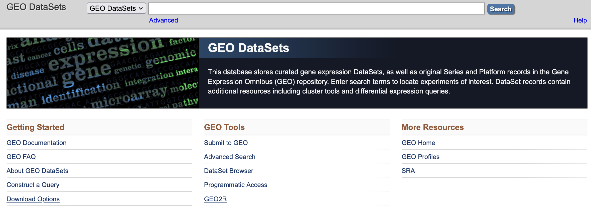
You can search NCBI GEO DataSets results based on keywords such as species, gene names, conditions, study types, or diverse filtering schemes. For more information on these see GEO DataSets Query Examples.
For this example, I searched regeneration AND salamander and resulted in 2148 studies.
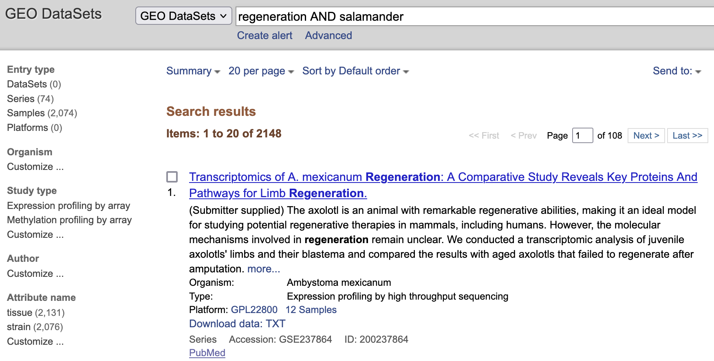
I explored the first entry corresponding to this study. The NCBI GEO included a detailed description of expression profiling experiments in the axolotl salamander Ambystoma mexicanum. Including GEO accession, title, organism, experiment type, summary, overall design,
contributors, citation, a submission descriptive, relationships with other NCBI submissions,
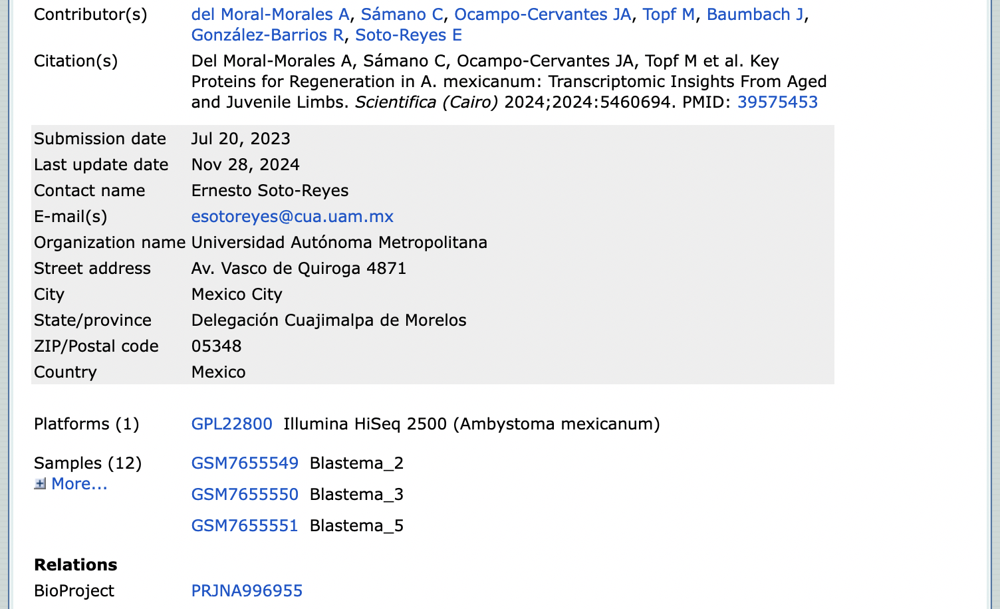
and the files that can be download from the GEO accession submission such as the GSE237864_count_matrix.txt.gz that contain the NGS read counts used for differential gene expression analysis.
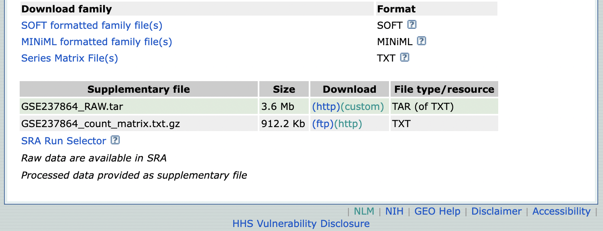
I added this file uncompressed to the LINK TO FILES of BIO/BIT 209. For reference, we can import this dataset as explained above.
Salamander_Moral_Morales_etal_2024_df <- read.table (file = "~/Desktop/Teach_R/class_datasets/GSE237864_count_matrix.txt",
header = TRUE,
sep = "\t",
stringsAsFactors = FALSE)
head(Salamander_Moral_Morales_etal_2024_df)
# ensembl_gene_id_version X18134R.126.01 X18134R.126.02 X18134R.126.03 X18134R.126.04 X18134R.126.05 X18134R.126.06 X18134R.126.07
#1 AMEX60DD000001 2 0 8 1 0 3 0
#2 AMEX60DD000002 8 14 2 4 2 3 5
#3 AMEX60DD000003 88 123 99 53 59 176 121
#4 AMEX60DD000004 22 80 27 34 28 45 65
#5 AMEX60DD000005 11 2 0 11 1 4 10
#6 AMEX60DD000006 2 8 2 3 3 8 2
str(Salamander_Moral_Morales_etal_2024_df)
#''data.frame': 99088 obs. of 13 variables:
# $ ensembl_gene_id_version: chr "AMEX60DD000001" "AMEX60DD000002" "AMEX60DD000003" "AMEX60DD000004" ...
# $ X18134R.126.01 : int 2 8 88 22 11 2 0 213 0 0 ...
# $ X18134R.126.02 : int 0 14 123 80 2 8 0 156 0 0 ...
# $ X18134R.126.03 : int 8 2 99 27 0 2 0 276 0 0 ...
# $ X18134R.126.04 : int 1 4 53 34 11 3 0 63 1 0 ...
# $ X18134R.126.05 : int 0 2 59 28 1 3 0 63 0 0 ...
# $ X18134R.126.06 : int 3 3 176 45 4 8 0 116 0 0 ...
# $ X18134R.126.07 : int 0 5 121 65 10 2 0 75 0 0 ...
# $ X18134R.126.08 : int 1 4 85 54 7 0 0 122 0 0 ...
# $ X18134R.126.09 : int 4 26 164 65 12 6 0 165 0 0 ...
# $ X18134R.126.10 : int 6 5 127 41 0 0 0 133 0 0 ...
# $ X18134R.126.11 : int 2 20 176 63 9 7 0 195 0 0 ...
# $ X18134R.126.12 : int 3 3 73 46 5 4 0 164 0 0 ...
dim(Salamander_Moral_Morales_etal_2024_df)
#[1] 99088 1330.13 Accessing online data: clinicaltrials.gov
Sometimes you have data that is published in a website and you want to extract some for your analyses. For example, NCBI Clinical Trials is an online registry and repository database of research studies conducted in the United States and around the world about treatments, diseases, and others.
You can search results of a clinical trial by key terms. For example, we could do a search for studies for asthma in Jamaica, NY, USA.
As of today (02/01/2023) this search resulted in two completed studies on asthma that include people in Jamaica, NY, USA.
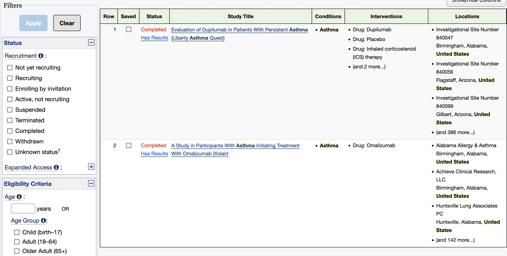
If you click on the first study, you will get to the results for this locality.
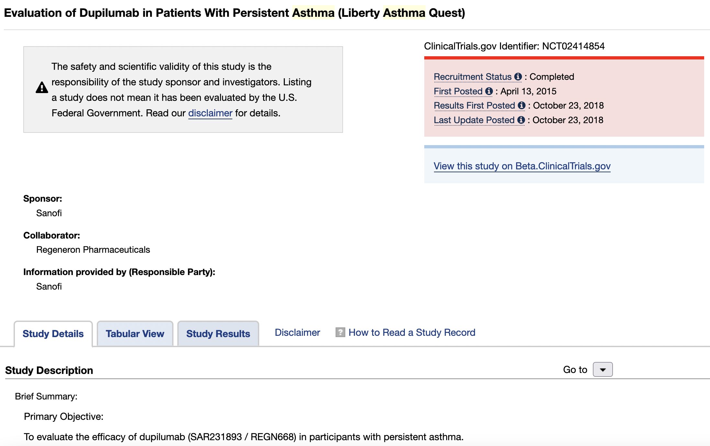
On this page, you can click on the Study Results tab and you can access the tabular results of this study. You could click on Beta.ClinicalTrials.gov tab for an alternative format view of these results.

Note: I could not find a easy way to get the results as tables other than copy such summary tables in text editor. More in the future.
30.14 Accessing online data: Data scrapping from a website
You can force text scraping from a website (e.g., the clinical trial results), but will require that you do the cleaning and selection of the data. One useful R-package is rvest for an easy harvest (scrape) of web pages. You can read the rvest vignette.
A simple scrapping for a not a very complicated webpage.
# Install and load rvest
install.packages("rvest")
library (rvest)
# Change to working directory
setwd("~/Desktop/Teach_R/Some_directoty")
# create an vector with web address
html <- read_html("https://www.stjohns.edu/academics/office-registrar/academic-calendar/final-exam-schedule")
html
#{{html_document}
#<html lang="en" dir="ltr" prefix="content: http://purl.org/rss/1.0/modules/content/ dc: http://purl.org/dc/terms/ foaf: http://xmlns.com/foaf/0.1/ og: http://ogp.me/ns# rdfs: http://www.w3.org/2000/01/rdf-schema# schema: http://schema.org/ sioc: http://rdfs.org/sioc/ns# sioct: http://rdfs.org/sioc/types# skos: http://www.w3.org/2004/02/skos/core# xsd: http://www.w3.org/2001/XMLSchema# ">
#[1] <head>\n<meta http-equiv="Content-Type" content="text/html; charset=UTF-8">\n<meta charset="utf-8">\n<script type="text/javascript">(window.NREUM|| ...
#[2] <body>\n <!-- Google Tag Manager -->\n <noscript><iframe src="//www.googletagmanager.com/ns.html?id=GTM-5STJNB" height="0" width="0" style="d ...
# Get dates as table
exams_table <- html_node(html , "table")
exams_table_tibble <- html_table(exams_table)
exams_table_tibble
# A tibble: 31 × 4
# `Class Meeting` Time `Final Exam/Final Class` Time
# <chr> <chr> <chr> <chr>
# 1 "Days" "Time" "Date" "Time"
# 2 "M-R" "9:05 a.m.-10:30 a.m." "May 4 (R)" "9:05 a.m.-11:05 a.m."
# 3 "M-R" "12:15 p.m.-1:40 p.m." "May 4 (R)" "12:15 p.m.-2:15 p.m."
# 4 "M-R" "5:00 p.m.-6:25 p.m." "May 4 (R)" "5:00 p.m.-7:00 p.m."
# 5 "M-R" "8:45 p.m.-10:10 p.m." "May 4 (R)" "8:45 p.m.-10:45 p.m."
# 6 "" "" "" ""
# 7 "T-F" "9:05 a.m.-10:30 a.m." "May 5 (F)" "9:05 a.m.-11:05 a.m."
# 8 "T-F" "12:15 p.m.-1:40 p.m." "May 5 (F)" "12:15 p.m.-2:15 p.m."
# 9 "T-F" "3:25 p.m.-4:50 p.m." "May 5 (F)" "3:25 p.m.-5:25 p.m."
#10 "T-F" "7:10 p.m.-8:35 p.m." "May 5 (F)" "7:10 p.m.-9:10 p.m."
# … with 21 more rows
# ℹ Use `print(n = ...)` to see more rows
# Write such table in a text file in your working directory
write.csv(exams_table_tibble, "sju_academic_calendar_scrap.csv")
write.table(exams_table_tibble, "sju_academic_calendar_scrap.txt", sep = "\t")A scrapping from more complex web pages will require you to work on the text data derived from it.
# Change to working directory
setwd("~/Desktop/Teach_R/Some_directoty")
# Create an vector with web address (for example a clinical trial results)
html <- read_html("https://clinicaltrials.gov/ct2/show/results/NCT02414854?cond=Asthma&cntry=US&state=US%3ANY&city=Jamaica&draw=2&rank=1")
html
#{html_document}
#<html xmlns="https://www.w3.org/1999/xhtml" lang="en">
#[1] <head>\n<meta http-equiv="X-UA-Compatible" content="IE=edge">\n<meta name="viewport" content="width=device-width, initial-scale=1">\n<meta http-equ ...
#[2] <body> \n<script type="text/javascript">\n jQuery.getScript("https://www.ncbi.nlm.nih.gov/core/alerts/alerts.js", function () {\n galert([' ...
# Get all the text in a vector
text_on_webpage <- html_text(html)
head(text_on_webpage)
# Write such vector in a text file in your working directory
write(text_on_webpage, "text_on_webapge.txt")